CS184/284A Spring 2026 Homework 4 Write-Up
Link to webpage: https://cal-cs184-student.github.io/hw-webpages-dvyns/hw4/index.html
Link to GitHub repository: https://github.com/cal-cs184-student/hw4-clothsim-hw4anyname-1
Overview
Give a high-level overview of what you implemented in this homework. Think about what you've built as a whole. Share your thoughts on what interesting things you've learned from completing the homework.
This writeup currently documents working cloth construction, numerical integration, and collisions with external primitives. For Part 3 specifically, the implementation now handles both sphere and plane collisions by projecting penetrated point masses back to the collision surface and scaling the correction by (1 - friction). Later sections of the writeup are still incomplete, so they should be treated as placeholders rather than finished submission text.
Part 1: Masses and springs
Wireframe views of scene/pinned2.json
The following two screenshots show the cloth wireframe from viewing angles where the point-mass lattice and spring connectivity are easy to see. These are the general wireframe views requested by the spec before comparing individual constraint configurations.
|
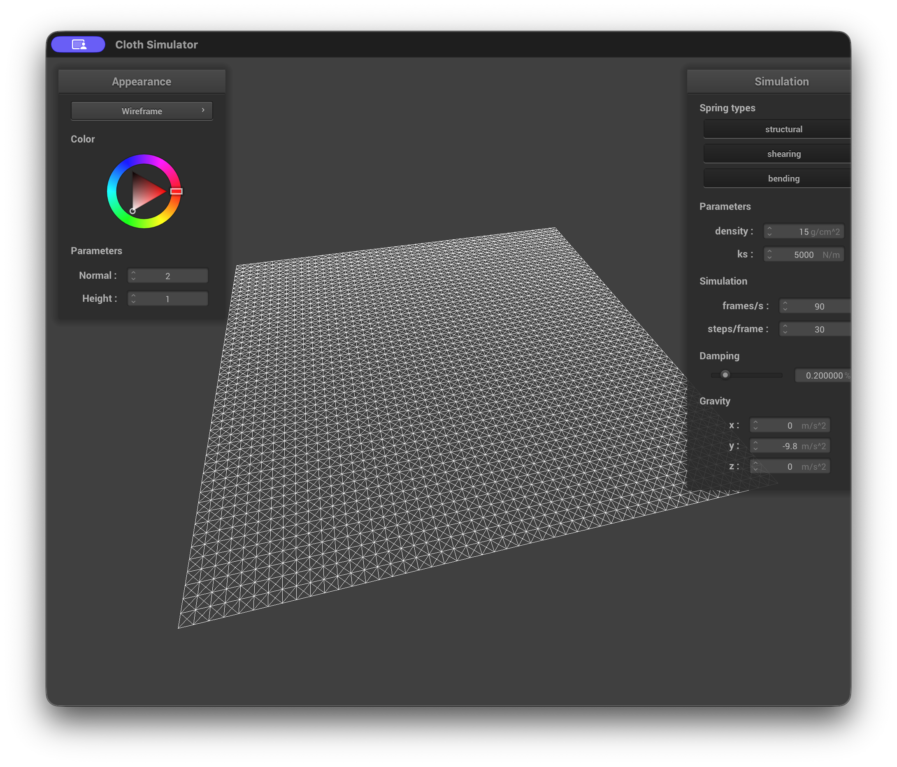 scene/pinned2.json, angle 1. |
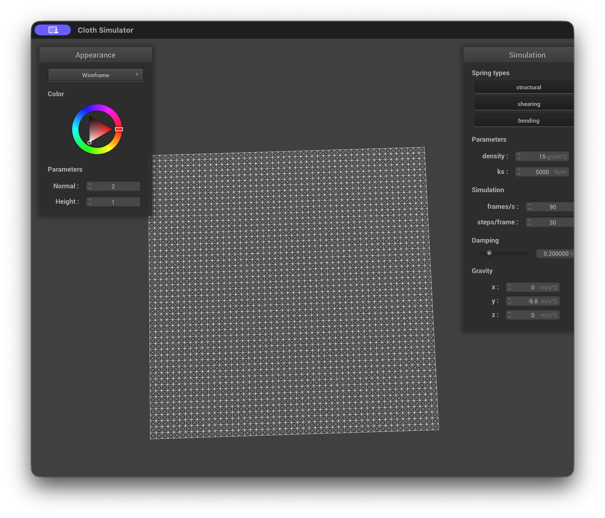 scene/pinned2.json, angle 2. |
1. Without any shearing constraints (structural + bending only):
With shearing disabled, the wireframe displays a clean orthogonal grid of squares. Springs only connect each point mass to its direct horizontal and vertical neighbors, so each cell appears as a plain rectangle with no diagonal lines crossing it.
|
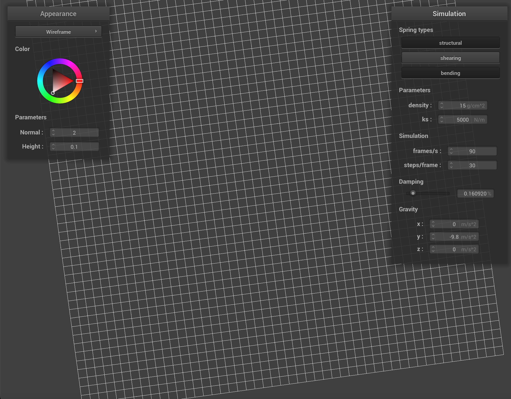 |
2. With only shearing constraints:
With only shearing enabled, the horizontal and vertical structural edges disappear entirely. What remains is a rotated diamond lattice, only the diagonal springs are visible, connecting each mass to its upper-left and upper-right neighbors. The cloth appears as a grid of diamond shapes tilted 45°.

|
3. With all constraints:
With all three constraint types enabled, the wireframe shows the densest structure: the orthogonal structural grid is overlaid with shearing diagonals, subdividing every square cell into triangles. The bending springs (connecting masses two apart) are also present but visually overlap with the structural springs and are difficult to distinguish separately.

|
Part 2: Simulation via numerical integration
Default Parameter Simulation
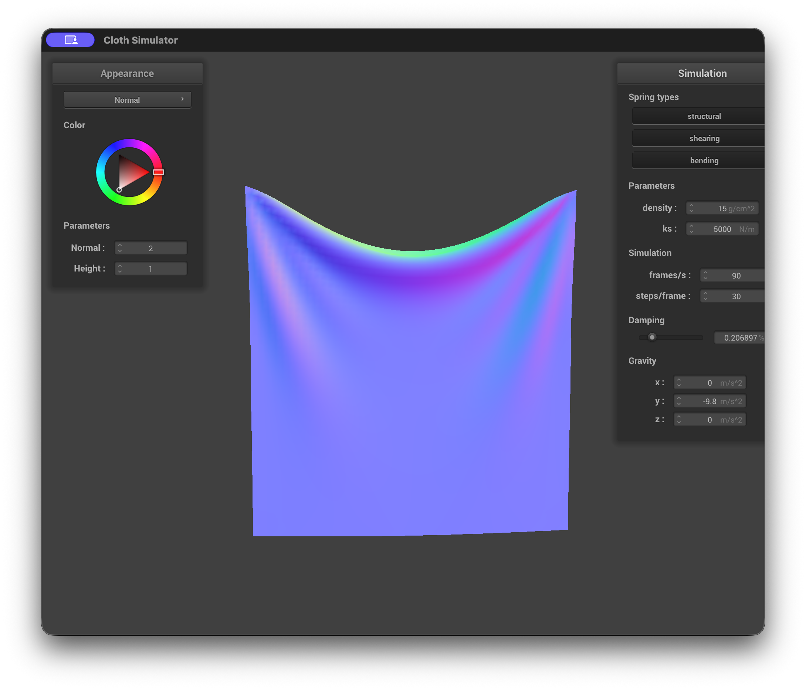
Effects of Changing ks (Spring Constant)
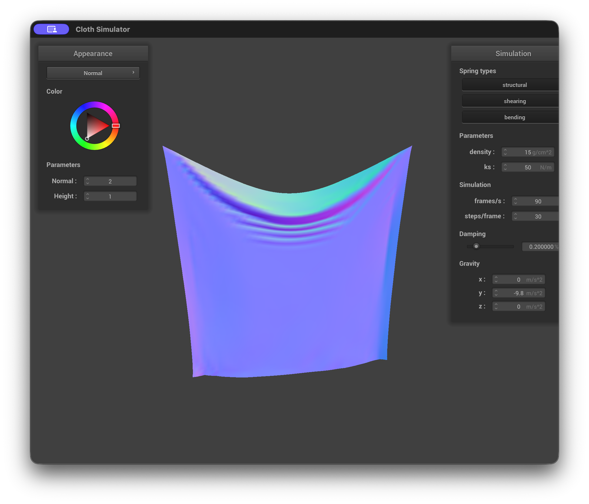
ks = 50.With a very low ks (50 N/m), the springs offer little resistance to deformation. The cloth shows far more ripples and never fully smooths out even at rest. Although it cannot be seen in the image oscillations continue for much longer than in the default case.
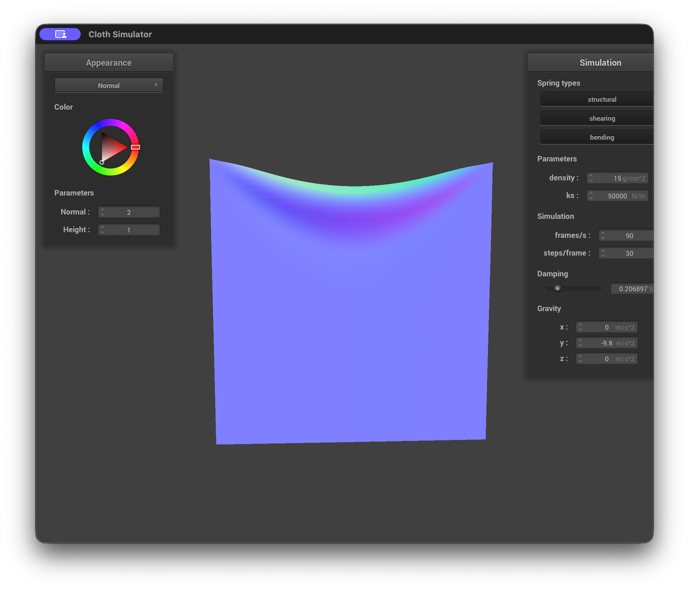
ks = 50000.With a very high ks (50000 N/m), the springs strongly resist deformation and the cloth hangs much more rigidly. As seen in the image, the top edge forms only a singlecurve with minimal wrinkling. The overall surface is mostly flatter compared to the default parameters.
Effects of Changing Density
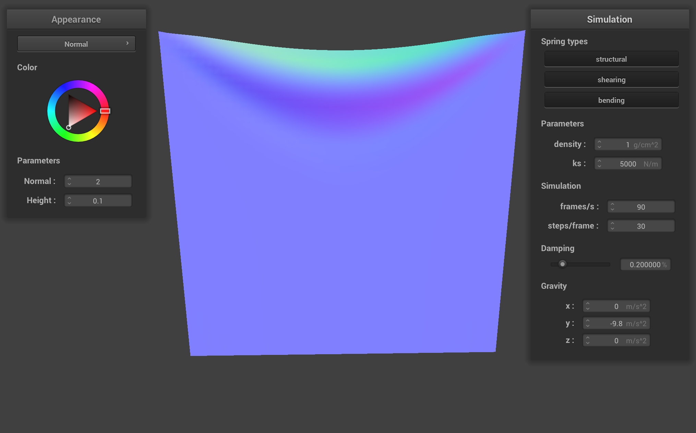
density = 1.With low density (1 g/cm²), the cloth does not have enough weight to fully extend most of the springs. It hangs with a shallower smooth curve at the top and a relatively flat body.

density = 150.With high density (150 g/cm²), the cloth to sags much deeper. The there are multiple curves that form at the top and sides pull inward. The resulting image is more visually similar to the low-ks case since both result in greater deformation relative to the spring forces.
Effects of Changing Damping
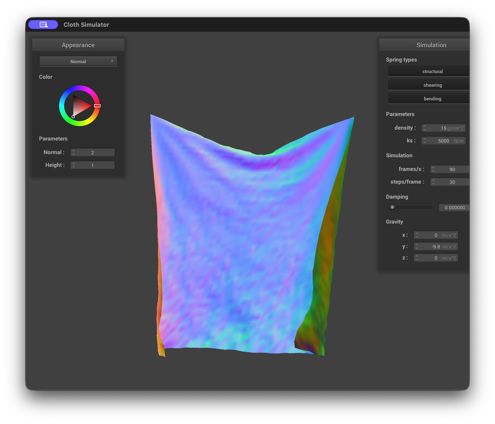
damping = 0%.With damping at 0%, energy is never removed from the system and it continues to oscillate chaotically never reaching a resting state.
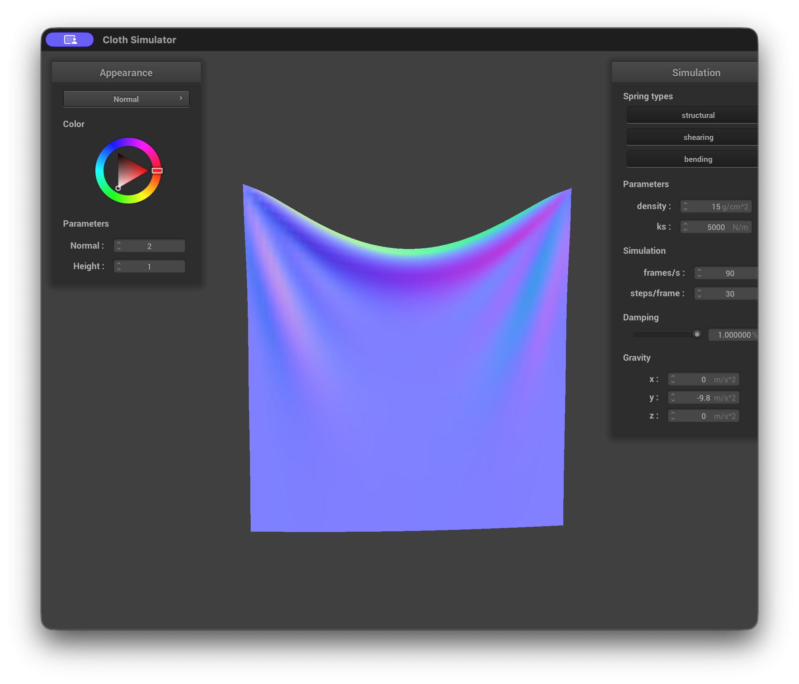
damping = 1%.With damping at ~1% (damping1), the cloth loses energy quickly and settles into a smooth, stable resting position with no oscillation, falling in a slow controlled motion compared to the undamped case. It looks very similar to the default parameter case.
scene/pinned4.json Final Resting State
Default Parameters: density = 15 g/cm², ks = 5000 N/m, damping = 0.2%
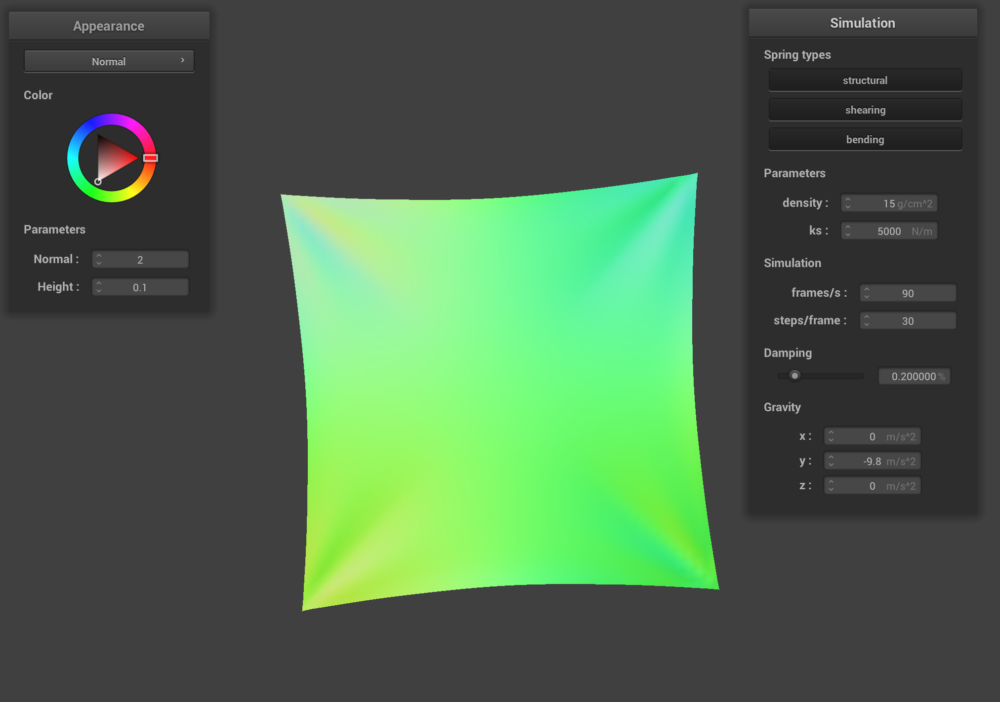
scene/pinned4.json at rest with default parameters.The cloth is pinned at all four corners and sags gently downward under gravity, forming a shallow bowl-like depression in the center.
The normal shading reveals the subtle curvature, the edges bow inward slightly and the corners are pulled taut, while the middle hangs the lowest.
The color variation across the surface reflects the changing surface normals, with the center facing more directly upward (bright green) and the corners and edges showing warmer yellow/white tones where the geometry is more steeply angled.
Part 3: Handling collisions with other objects
Sphere Collisions
Each point mass checks whether its updated position lies inside the sphere. If it does, the code computes a direction from the sphere center toward the point mass, projects the point to the sphere surface, and moves the mass from last_position toward that surface point using a friction-scaled correction.
The tangent point is computed by extending the ray from the origin through the point mass position to land exactly on the sphere surface. A correction vector is computed from the point mass's last position to this tangent point and applied scaled by (1 - friction).
The implementation also guards against the degenerate case where the point mass lands exactly at the sphere center by falling back to the previous-step direction instead of normalizing a zero vector.
The core sphere collision implementation is shown below:
void Sphere::collide(PointMass &pm) {
Vector3D diff = pm.position - origin;
double distance = diff.norm();
if (distance >= radius) {
return;
}
Vector3D direction;
if (distance > 0) {
direction = diff / distance;
} else {
Vector3D last_diff = pm.last_position - origin;
direction = last_diff.norm() > 0 ? last_diff.unit() : Vector3D(0, 1, 0);
}
Vector3D tangent_point = origin + direction * radius;
Vector3D correction = tangent_point - pm.last_position;
pm.position = pm.last_position + correction * (1.0 - friction);
}Plane Collisions
For plane collisions, each point mass is tested by computing the signed distances of its current and last positions from the plane using the dot product with the plane normal. If the signs differ, the point mass has crossed the plane between timesteps. It avoids falsely re-colliding a point mass that starts exactly on the plane and then moves away from it.
When a correction is needed, the code projects the point mass to the plane, nudges it by a small SURFACE_OFFSET to avoid clipping, and applies the correction from last_position with friction.
The offset direction is chosen so exact-contact edge cases are pushed to the correct side of the plane.
The plane collision code:
#define SURFACE_OFFSET 0.0001
void Plane::collide(PointMass &pm) {
double curr_dist = dot(pm.position - point, normal);
double last_dist = dot(pm.last_position - point, normal);
if ((curr_dist > 0 && last_dist > 0) ||
(last_dist == 0 && curr_dist >= 0)) {
return;
}
Vector3D tangent_point = pm.position - normal * curr_dist;
Vector3D offset_direction;
if (last_dist > 0) {
offset_direction = normal;
} else if (last_dist < 0) {
offset_direction = -normal;
} else {
offset_direction = curr_dist < 0 ? normal : -normal;
}
Vector3D correction =
tangent_point + SURFACE_OFFSET * offset_direction - pm.last_position;
pm.position = pm.last_position + correction * (1.0 - friction);
}Sphere ks Comparison
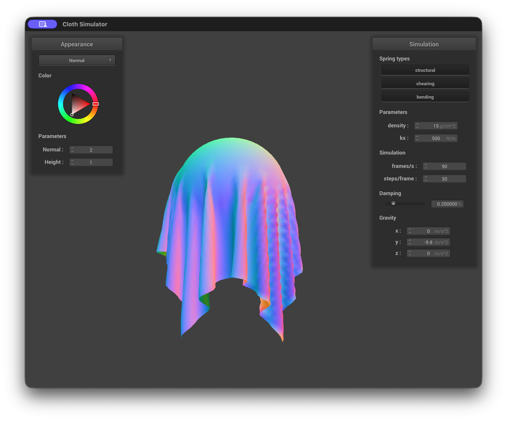
With ks = 500, the weak springs allow the cloth to conform very closely to the sphere, draping with many thin tight vertical folds hanging straight down.
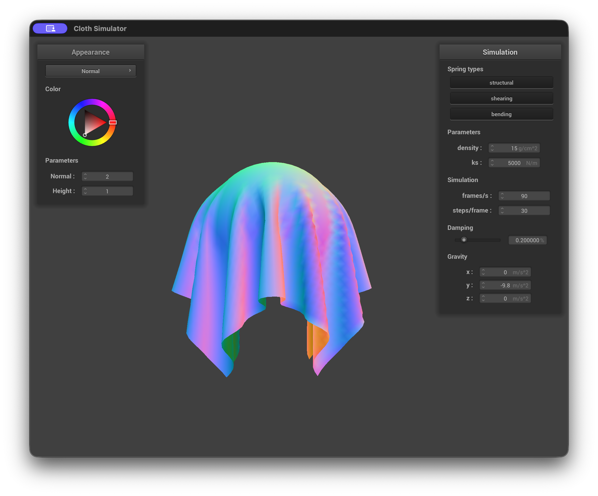
With ks = 5000 (default), the cloth drapes naturally over the sphere with a smooth dome shape at the top and a moderate number of evenly distributed folds below.
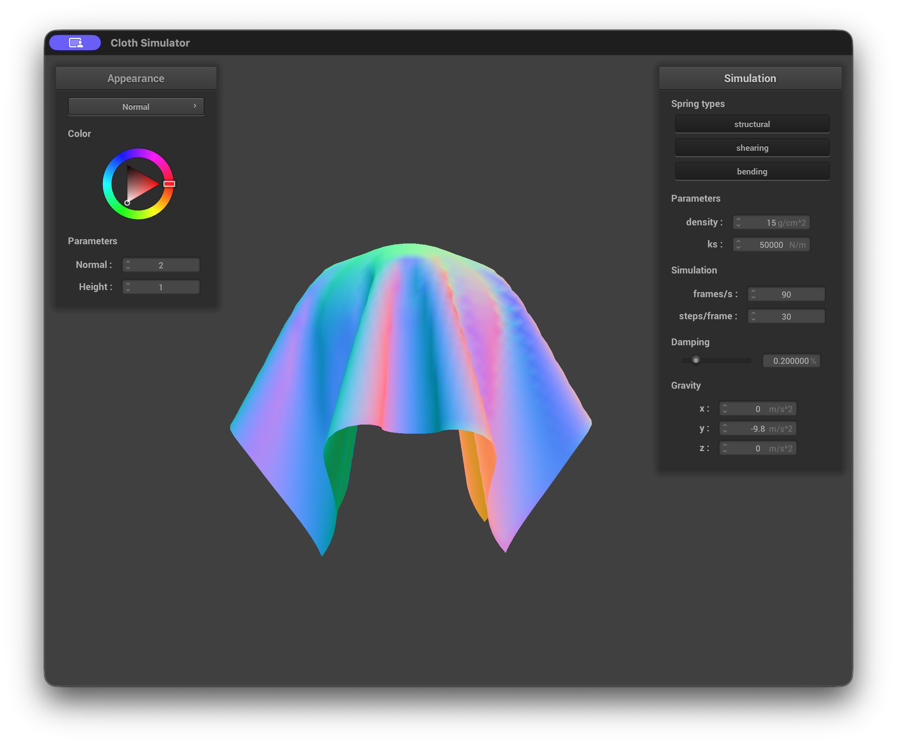
With ks = 50000, the stiff springs strongly resist deformation, the cloth spreads rigidly outward with fewer but broader folds and conforms much less to the sphere's curvature, behaving more like a stiff sheet than soft fabric.
Plane Resting State
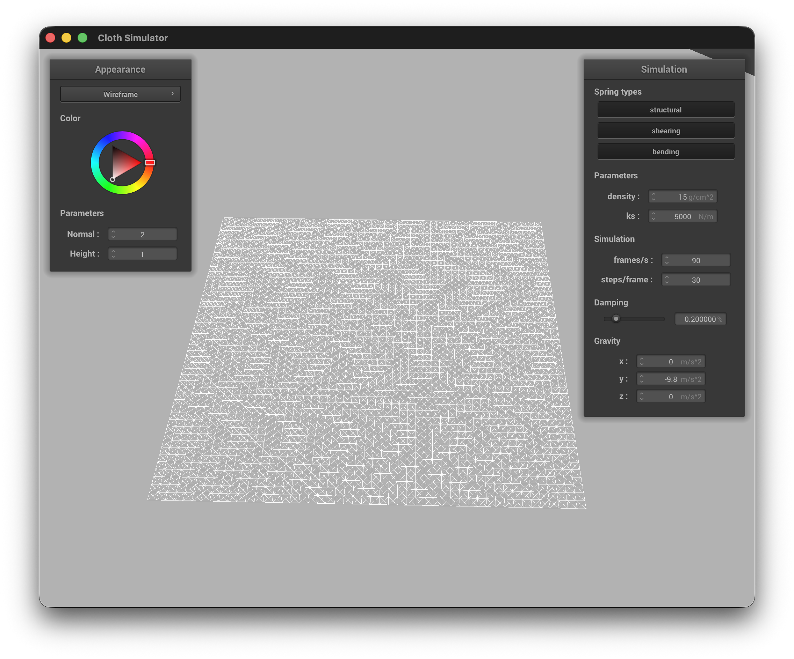
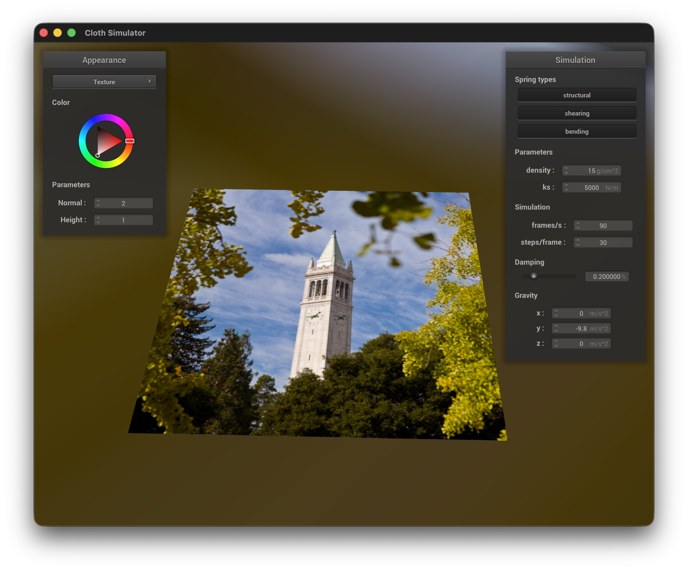
Part 4: Handling self-collisions
We implemented self-collision with spatial hashing in Cloth::hash_position, Cloth::build_spatial_map, and Cloth::self_collide. At each simulation step, the cloth partitions space into boxes of size 3 * width / num_width_points by 3 * height / num_height_points by max(w, h). Each point mass is hashed into one of these boxes, and the spatial map stores a list of point masses for each occupied box.
During self-collision resolution, each point mass only checks the other point masses in its own hash bucket instead of comparing against the entire cloth. If another mass is closer than 2 * thickness, we compute the displacement needed to push the current mass away until the pair is exactly 2 * thickness apart. The final displacement is the average of all such correction vectors divided by the number of simulation steps, which keeps the correction from being too abrupt in a single step. Pinned masses are not moved by this pass.
The spatial map construction and hash function are shown below. The cloth bins each point mass into a 3D box whose dimensions are based on the cloth resolution, then uses a weighted combination of the snapped box coordinates as the hash key:
void Cloth::build_spatial_map() {
for (const auto &entry : map) {
delete(entry.second);
}
map.clear();
for (auto &pm : point_masses) {
float key = hash_position(pm.position);
if (map.find(key) == map.end()) {
map[key] = new vector<PointMass *>();
}
map[key]->push_back(&pm);
}
}
float Cloth::hash_position(Vector3D pos) {
double box_width = 3.0 * width / num_width_points;
double box_height = 3.0 * height / num_height_points;
double box_depth = box_width > box_height ? box_width : box_height;
double x = pos.x - fmod(pos.x, box_width);
double y = pos.y - fmod(pos.y, box_height);
double z = pos.z - fmod(pos.z, box_depth);
return x * 73856093.0 + y * 19349663.0 + z * 83492791.0;
}The actual self-collision response then looks only within the current point mass's bucket, accumulates separation corrections against nearby masses, and applies the average displacement scaled by the number of simulation steps:
void Cloth::self_collide(PointMass &pm, double simulation_steps) {
if (pm.pinned) return;
float key = hash_position(pm.position);
if (map.find(key) == map.end()) return;
Vector3D correction(0, 0, 0);
int num_corrections = 0;
double min_distance = 2.0 * thickness;
for (PointMass *candidate : *map[key]) {
if (candidate == &pm) continue;
Vector3D direction = pm.position - candidate->position;
double distance = direction.norm();
if (distance >= min_distance) continue;
if (distance == 0) {
direction = pm.position - pm.last_position;
if (direction.norm() == 0) {
direction = Vector3D(1, 0, 0);
}
distance = 0;
}
correction += direction.unit() * (min_distance - distance);
num_corrections++;
}
if (num_corrections > 0) {
pm.position += correction / num_corrections / simulation_steps;
}
}Self-collision sequence
These placeholders should be replaced with screenshots from ./clothsim -f ../scene/selfCollision.json using the same camera angle across the sequence.
|
Screenshot placeholder: default selfCollision scene at the first visible self-contact, while the falling cloth just begins folding into itself.
|
Screenshot placeholder: default selfCollision scene midway through the fall, with several folds stacked but before the cloth has mostly settled.
|
|
Screenshot placeholder: default selfCollision scene near rest on the plane, showing the final pile of cloth without obvious self-intersection.
|
Parameter effects
Lowering ks makes the springs weaker, so the cloth bends and crumples into tighter, more numerous folds as it falls onto itself. Raising ks makes the sheet resist deformation more strongly, producing broader folds and a flatter, less bunched-up resting shape.
Changing density changes how strongly the spring forces accelerate each point mass. Lower density makes the cloth respond more strongly to the same spring forces, so folds tend to open up and rebound more. Higher density makes the cloth feel heavier relative to its springs, so it collapses into deeper, more compressed folds.
|
Screenshot placeholder: selfCollision scene with low spring stiffness, e.g. ks = 500, captured after folds are clearly visible.
ks: tighter folds and more crumpling. |
Screenshot placeholder: selfCollision scene with high spring stiffness, e.g. ks = 50000, at a similar time/camera angle as the low-ks capture.
ks: broader, stiffer folds. |
|
Screenshot placeholder: selfCollision scene with low density, e.g. density = 5, captured once the cloth has folded onto the plane.
|
Screenshot placeholder: selfCollision scene with high density, e.g. density = 150, captured from the same view as the low-density image.
|
Part 5: Shaders
A shader program is a small program that runs on the GPU as part of the rendering pipeline. In this homework, the vertex shader processes per-vertex inputs like position, normal, tangent, and UV coordinates, transforms them into the spaces needed by the renderer, and passes those values forward as varyings. After rasterization, the fragment shader receives interpolated versions of those values for each fragment and computes the final color written to the screen. That division of labor is what lets the same underlying cloth or sphere geometry look diffuse, glossy, textured, bumped, displaced, or mirror-like depending on which shader is active.
Our Part 5 implementation starts with Lambertian diffuse shading and then extends that base to Blinn-Phong shading, texture mapping, bump mapping, displacement mapping, and environment-mapped reflections. The diffuse and Blinn-Phong shaders use world-space fragment position, surface normal, camera position, and light position to compute lighting. The texture shader replaces a constant albedo with a sampled 2D image. The bump and displacement shaders both interpret a texture as a height field, but bump mapping only perturbs the shading normal while displacement mapping also modifies the vertex positions. The mirror shader reflects the view direction about the normal and uses that reflected direction to sample a cubemap.
Blinn-Phong shading
The Blinn-Phong model combines ambient, diffuse, and specular terms. The ambient term adds a small constant base illumination so surfaces are not completely black in shadowed regions. The diffuse term scales with max(dot(n, l), 0.0), so it is strongest when the surface faces the light directly. The specular term uses the half-vector between the view and light directions, creating a highlight where the surface is oriented to reflect light toward the camera. In our shader, we used an ambient coefficient of about 0.1, a white-ish specular coefficient of about 0.6, and a shininess exponent of 64, which gives a relatively tight highlight without making the cloth look unnaturally metallic.
To generate the required component screenshots, the full shader can be decomposed by temporarily outputting only the ambient term, only the diffuse term, or only the specular term from Phong.frag. The normal production render uses the sum of all three terms.
|
Screenshot placeholder: ambient-only Blinn-Phong render.
Phong.frag. |
Screenshot placeholder: diffuse-only Blinn-Phong render.
Phong.frag. |
|
Screenshot placeholder: specular-only Blinn-Phong render.
|
Screenshot placeholder: full Blinn-Phong render.
|
Texture mapping
The texture mapping shader is the simplest material in this part. The vertex shader passes the interpolated UV coordinate into the fragment stage, and the fragment shader samples u_texture_1 with texture(u_texture_1, v_uv). That means the visible color comes from an image lookup instead of from a constant color. For the writeup screenshot required by the spec, this slot should use a custom texture placed in /textures/ rather than one of the default starter textures.
|
Screenshot placeholder: texture shader using your own custom texture from
/textures/.
|
Bump mapping and displacement mapping
Both shaders treat the red channel of u_texture_2 as a height map. For bump mapping, we compute finite differences in texture space,
dU = (h(u + 1 / w, v) - h(u, v)) * k_h * k_n and
dV = (h(u, v + 1 / h) - h(u, v)) * k_h * k_n,
then construct the local normal (-dU, -dV, 1). We transform that local-space normal back into model/world space with the TBN matrix built from the tangent, bitangent, and original normal. This changes the lighting response without changing the underlying mesh, so the object appears more detailed while its silhouette stays the same.
Displacement mapping uses the same height field but also moves each vertex along its original normal in Displacement.vert. That means the geometry itself is modified before rasterization, so the final surface can visibly bulge or recess instead of only faking the effect through shading. With the same height texture, bump mapping tends to look smoother on a coarse sphere because most of the detail is carried by per-fragment normal perturbations, while displacement mapping is much more sensitive to tessellation because only existing vertices can move.
On a coarse sphere such as -o 16 -a 16, the bump-mapped render still shows plausible fine lighting variation, but the silhouette remains obviously faceted because the mesh itself has not changed. The displacement shader reacts more strongly to mesh resolution: on the coarse sphere, the displaced surface can only move a small number of vertices, so the relief looks stepped and blocky. On a fine sphere such as -o 128 -a 128, the displacement shader has enough vertices to approximate the height map much more smoothly, so both the surface profile and the silhouette become much more convincing. For the required comparison renders, the same non-default height texture should be used for both bump and displacement.
|
Screenshot placeholder: bump mapping on cloth using a non-default height texture.
|
Screenshot placeholder: bump mapping on sphere using the same height texture.
|
|
Screenshot placeholder: displacement mapping on sphere using the same height texture.
|
|
|
Screenshot placeholder: bump-mapped sphere at
-o 16 -a 16.
|
Screenshot placeholder: bump-mapped sphere at
-o 128 -a 128.
|
|
Screenshot placeholder: displacement-mapped sphere at
-o 16 -a 16.
|
Screenshot placeholder: displacement-mapped sphere at
-o 128 -a 128.
|
Environment-mapped reflections
The mirror shader uses the camera position and fragment position to compute the outgoing eye direction w_o, reflects that direction about the surface normal, and samples the cubemap with the reflected direction. This is a simple but effective approximation of a perfect mirror material because it replaces the explicit environment-light integration from the path tracer with a direct cubemap lookup. The effect is especially noticeable on the sphere, where the continuously changing normals cause the reflected environment to warp smoothly across the surface.
|
Screenshot placeholder: mirror shader on cloth.
|
Screenshot placeholder: mirror shader on sphere.
|
Custom shader
We did not implement the optional custom shader for this homework, so there is no extra credit shader result to document here.
A.I. Acknowledgement
Due to time constraints, a more substantial portion of the code and writeup were written with the help of A.I. tools compared to our previous homework submissions. In particular we used ChatGPT Codex and Claude Code for code generation and documentation. We have reviewed the implementation and ensured the writeup reflected our understanding of the assignment.